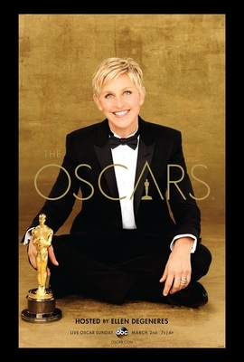
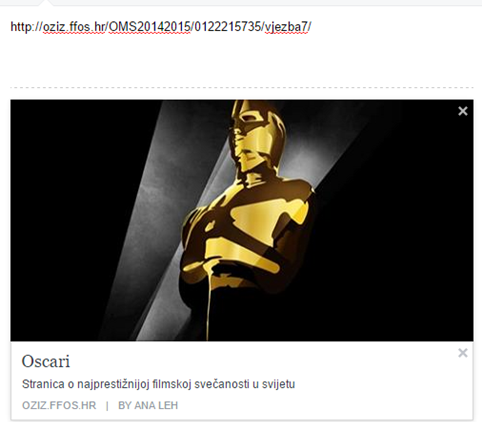

Oscar je popularno ime za američku filmsku nagradu Academy Award koju svake godine dodjeljuje Akademija filmskih umjetnosti i znanosti (AMPAS) kako bi se odala počast izvrsnosti profesionalaca u filmskoj industriji, uključujući redatelje, producente i scenariste.
Formalna svečanost na kojoj se nagrade dodjeljuju je među najstarijim, najpoznatijim, najprestižnijim i najgledanijim filmskim svečanostima u svijetu.
Prva dodjela Oscara održana je u četvrtak, 16. svibnja 1929. u Hotel Roosevelt u Hollywoodu kako bi se odala počast filmskim postignućima 1927. i 1928. Domaćini su bili glumac Douglas Fairbanks i redatelj Cecil B. DeMille. Glumica Anita Page je jedina živa poznata osoba koja je prisustvovala svečanosti.
86. dodjela Oscara s nagradama za najbolje u filmu za 2014. održala se u ponedjeljak, 3. ožujka 2014. u Dolby Theatreu u Hollywoodu.
Želite li ovu stranicu podijeliti na face-u, ona će izgledati ovako:
